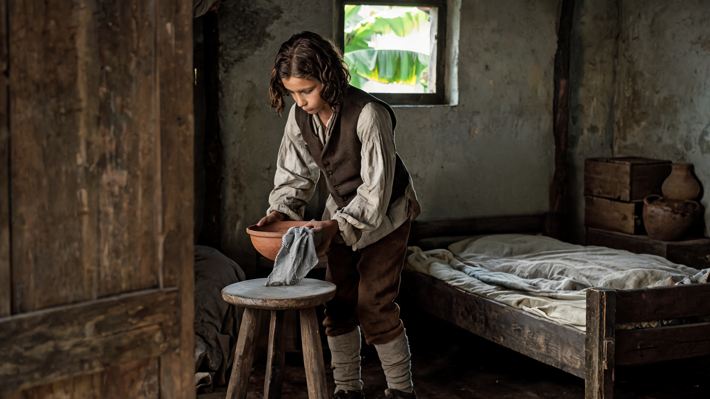
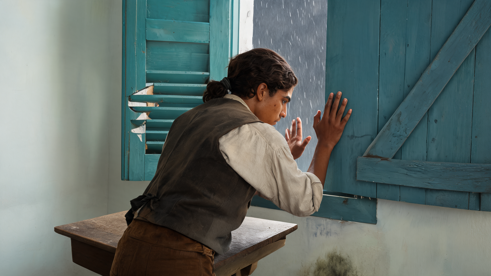

E01远海雨墙 · 群岛鸟瞰
鸟瞰
画面用途把岛与逼近的雨墙放在同一空间，让观众先知道风灾的尺度。
我们的观察雨墙、近岛和远处岛脊在同一透视中形成尺度；保留它的阴灰与低能见度，视频不另加闪电奇观。
E02海湾压雨 · 近岸鸟瞰
鸟瞰
画面用途俯看海湾与小港镇，具体交代风雨正在压向人住的地方。
我们的观察海湾与居民点更具体，适合替换E01；近空云丝较明显，后续只做很慢的飘移。
E03门廊下的雨街
地面风暴
画面用途从躲雨处看出去，风暴第一次以人在地面能感到的距离出现。
我们的观察门廊与街道有前后层次，右下误生的现代波纹薄片已局部修成旧木板；其余雨势与构图保留。
E04风压下的旧码头
地面风暴画面用途用受力的缆绳、浪水与岸石，把风压从窗内延伸到港口。
我们的观察浪、石岸和系缆柱已有清楚的物理关系，适合衔接S04窗板受力；只需要小幅自然起伏。

E05雨停后的街巷
灾后画面用途破损程度不均、屋子仍有人生活；用雨停后的静与远处清障交代后果。
我们的观察破屋、倒伏植株和远处清理者交代灾后后果；人物只占很小面积，后续不安排新的坍塌。

E06被压倒的甘蔗地
灾后
画面用途从街巷转向生计：泥水与伏倒的作物，把灾难后果扩展到岛上的劳动。
我们的观察伏倒甘蔗与泥水沟把后果扩展到生计；这是灾后备选，不用与街巷连放两次解释同一件事。
连进人物镜头的 68 秒粗排
以下 11 张静态缩略图只表达建议顺序与剪辑时长。人物图片沿用上一轮；还没有生成或拼接这些视频。
 S01 · 5 秒照料母亲00:00—00:05
S01 · 5 秒照料母亲00:00—00:05

S02 · 5 秒空床00:05—00:10 S03 · 7 秒商行谋生00:10—00:17
E01 · 4 秒远海雨墙 · 群岛鸟瞰00:17—00:21
E03 · 5 秒门廊下的雨街00:21—00:26
S03 · 7 秒商行谋生00:10—00:17
E01 · 4 秒远海雨墙 · 群岛鸟瞰00:17—00:21
E03 · 5 秒门廊下的雨街00:21—00:26

S04 · 7 秒风灾00:26—00:33 E04 · 4 秒风压下的旧码头00:33—00:37 E05 · 5 秒雨停后的街巷00:37—00:42 S05 · 7 秒写作00:42—00:49
S05 · 7 秒写作00:42—00:49
 S06 · 10 秒获得支持00:49—00:59
S06 · 10 秒获得支持00:49—00:59
 S07 · 9 秒登船00:59—01:08
S07 · 9 秒登船00:59—01:08